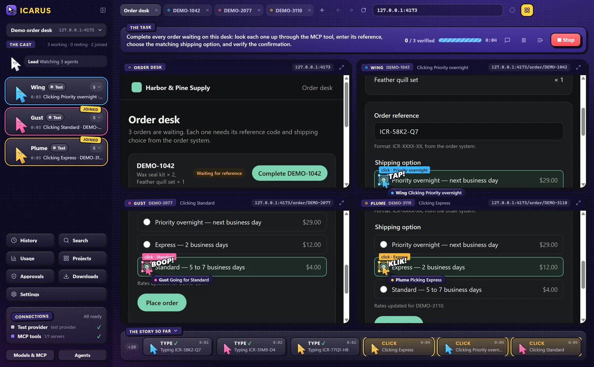
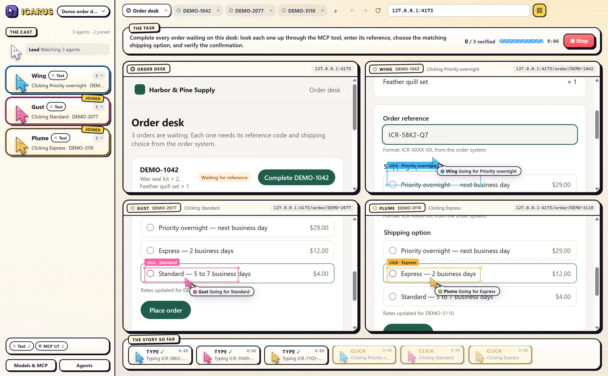
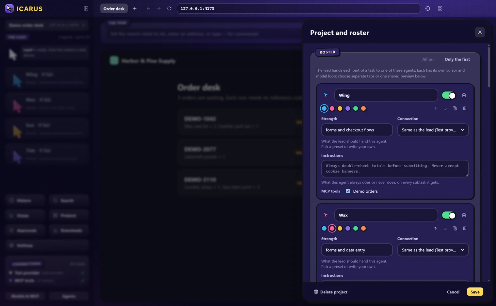

CartShippingPay
Desk lamp, brassQty 1 · from order #4821$48.00
- Shipping
- $0.00
- Total
- $48.00
StandardExpressPlace order
Vol. 1I Can Actually Run Useful Stuff
ICARUS is a desktop app where a swarm of visible cursors operates live web pages. Each cursor is an AI agent with its own model loop. A lead agent splits your task into small jobs, the agents take them at once, each in its own browser tab, and when everyone is busy, helpers join.
Prologue
Scattered, the way a Friday afternoon feels.
The lead calls them in. The roster takes the leading edge.
Helpers fill out the wings: up to 24 agents at once, each with its own cursor and tab.
Episode 1
A webtoon in fourteen panels about one ordinary task and a swarm that refuses to guess. Every gag is a real feature.
Friday, 4:52 pm. One task. Forty-seven tabs.
ゴゴゴゴrumble
I just want to reorder a lamp…
…and log the cost. And find out when it arrives. And—
Hand me the mouse.
キラーンsparkle
It's all yours.
Leave it to us.
Wingforms & checkout
Waxdata entry
Sunreading
Tideresearch
ドドーン!da-da-dan!
ズバッslash!
One task. Eight small jobs.
カチッclick
カタカタclack clack
mcp · lookup_order #4821
プルルring ring
スーッscroll
Everyone busy? We're in!
ピョンboing
ガーンgaan
カチッclick
…looks again. Clicks.
シーンsilence…
Press it… again?
Absolutely. Not.
Held · uncertainゴゴゴmenace
バン!stamp!
8 of 8, all on the page. Nobody flew too close to the sun.
Sun is fine.
How it works
The lead splits your task into small jobs: one page, one goal, one check each. The roster takes them at once, helpers join when everyone is busy, and every result is checked where it landed before the run is called done.
1 The lead reads your task and the page.
Split it small.
2 Agents take the jobs, many at once.
ダッgo!
3 Each works its own tab, with real clicks.
カチッclick
4 Every result is checked on the page.
Verifiedバン!stamp!
What it does
The models and tools run on your machine. The agents act through the real browser and report only what they can show on the page.
Runs on your own model.
Any OpenAI-compatible endpoint: LM Studio, llama.cpp server, Ollama or vLLM.
http://127.0.0.1:1234/v1Bring your own account!
Claude Code, Codex or Gemini CLI, already signed in. No API key; the CLI's own shell, file and web tools stay off.
claude-code · codex · gemini-cliPlug in your tools.
Over stdio or Streamable HTTP, and each project picks which ones its agents may use.
stdio · streamable httpKeys stay home.
API keys, env values and headers live in the local runtime; the app and its logs only see them masked.
apiKey: ••••••••Real clicks. Real keys.
Dispatched through the Chrome DevTools Protocol, not simulated by scripts in the page.
Input.dispatchMouseEventIt moved? I look again.
Just before each press the target is found again. If the page changed, the agent re-targets or re-reads.
e12 → re-resolvedBusy? We'll help!
Many small jobs at once. When every agent is busy, a helper joins with its own cursor and tab, up to 24.
Agents at once: 8No answer… I wait.
A submit with no clear answer is held as uncertain. It is never sent twice.
uncertain · heldSTOP means stop.
One press aborts model requests, cancels MCP calls and dispatches nothing more, for every agent.
notifications/cancelledShow me the page.
A run is done only when the evidence each agent reports is found on the page.
evidence · foundInside the app
The view the swarm works in, the agents you give it, and the model and MCP servers it runs on.


shots/live-view.png16:10 · 2400 × 1500

shots/roster.png16:10 · 2400 × 1500

shots/connections.png16:10 · 2400 × 1500Run it
You need Node 22 or newer and a local model behind an OpenAI-compatible API. The defaults match LM Studio on 127.0.0.1:1234.
1Install
npm installFetches the dependencies, once.
2Terminal one
npm run demoServes the demo pages the swarm practises on.
3Terminal two
npm startBuilds and opens the app.
To be continued…つづく